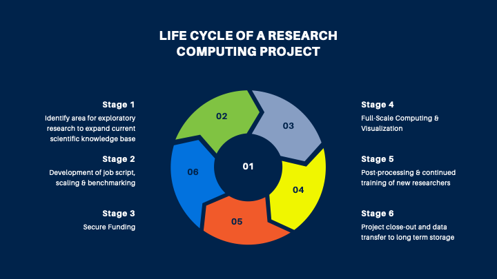

Research Computing Guidance
Budget Guidance for HPC
whether starting a new research project or continuing one at Mines this document will help you find the resources to get your High-Performance Computing workload done. Some useful free compute cycles through programs such as RMACC via Alpine or NSF ACCESS Program, will help you get some exploratory compute cycles to awarded a grant, and might be used through out the project.
Mines HPC systems on-premise are operated under a Operational Expenditure (OpEX) cost model, where researchers pay for the CPU/hours cycles used. This document aims to help write future research grants that use HPC resources at Mines.
Schedule a consultation appointment at RC.mines.edu
Life Cycle of Research Computing Projects

Stage 1: Identify area for exploratory research to expand current scientific knowledge base
Choice of Software
Vet software for security and other restrictions
Open Source vs Commercial
Commercial: Licensing requirements
FlexLM server
Site-wide, single user, multi-user, etc.
Open Source
Optimized build for compute architecture
Self-authored software
Identify software languages, compilers, libraries required, etc.
Stage 2: Development of scripts, scaling & benchmarking
Identify workload and workflows
Common Parallel Workflows:
Multi-node (e.g. MPI)
Multi-threaded (e.g. OpenMP)
Single or Multi GPU (NVIDIA using CUDA, AMD using OpenCL, etc)
Embarrassingly Parallel – Parameter Sweeps, Markov Chain Monte Carlo Simulations
Other considerations
High memory (relative to CPU requirements)
High data I/O (e.g. machine learning)
Stage 2 (alternative): Find published benchmark (little to no experience with software) or manual benchmarking (established codebase or simulation input deck)
Run test problem across multiple hardware configurations:
Local workstation or laptop
Freely Accessible HPC
Performance Analysis Consultation Checklist
A working test problem of model/code
What compute resources were used to verify code? (No. of cores, memory, etc)
Model can use multiple cpus and/or nodes
Anticipated number of runs of model
Parameter matrix
Outcomes: Performance Analysis report
Weak scaling (vary problem size proportionally to no. of processors)
Strong scaling (fixed problem size -> increase no. of processors)
Scaling analysis will estimate to user the amount of core-hours per job they need
Stage 3: Pre-Funded HPC options
No funding:
CU Boulder’s Alpine via RMACC
Open Science Grid (if user has an Embarassingly Parallel workflow)
NSF ACCESS Program
Proposal required, but grant is not required
Stage 3 (grant supported HPC): Perform baseline parallel and efficiency analysis on Pre-Funded HPC choice
Use as an approximate scale -> estimate budget
Secure funding
Secure allocation on paid/NSF cluster, or fund AWS HPC
Stage 4: Full-scale Computing & Visualization
Setting up computing environment
Request software install
Project Allocation
User access account
Shared storage and project storage
Performance batch jobs
Data management
Visualization setups
Stage 5: Post-processing & continued training of new researchers
Data insights, data sharing, project publications
Training for new researchers
Stage 6: Project close-out and data transfer to long term storage
Metadata tagging
Archive ready datasets
Parameters to Determine
Nodes x Cores: total number of Cores used for simulation
Total jobs: Jobs needed to complete research project
Core Run Time (Cores * Hours): Wirk done by each CPU (CPUh)
Storage of Input and Output: Data sets inputs (multi-use or single-use)
Cost / (Core-Hour): Wendian = $0.02 (CPUh), Apex (AWS cloud) $0.04 and up and GPUs even more ie. $96/hour
Storage during & after simulation: S3-Bucket, Orebits, fast NVMe
Job Parametric Study: Number of simulations to assess science domain
GPU-Hour (GPUh): Increased costs for specialize resources. Wendian GPU V100 = 6 core-hour or $0.12.